FM Synthesis for Musical Instruments: Lab P-7: 4&5 Lab Exercise
Contents
- Preparation
- 4.1 Generating the Bell Envelopes
- 4.2 Parameters for the Bell
- 4.3 The Bell Sound
- a) Play the sound in each case
- b) Calculate the fundamental frequency in each case
- Result of fo
- c) Sounds comparing with I(t)
- d) Spectrogram and I(t)
- e) Compare between bell wave with A(t)
- f) Plot of 100-200 samples
- 4.4 Comments about the Bell
- 5 C-Major Scale
- Function: Bell Envelope
- Function: Bell
- Function: Instantaneous Frequency
Preparation
Clear the workspace and console
clc; clear;
4.1 Generating the Bell Envelopes
The function of the bell envelope is shown at the end of this script.
4.2 Parameters for the Bell
The function of the bell sound generator is shown at the end of this script. It also generates amplitude envelope A(t) and modulation index envelope I(t).
4.3 The Bell Sound
Test the bell function by changing different parameters in 6 different cases.
% Generate ff -> fc & fm ff1 = [110 220]; ff2 = [220 440]; ff3 = [110 220]; ff4 = [110 220]; ff5 = [250 350]; ff6 = [250 350]; % Generate Io Io1 = 10; Io2 = 5; Io3 = 10; Io4 = 10; Io5 = 5; Io6 = 3; % Generate tau tau1 = 2; tau2 = 2; tau3 = 12; tau4 = 0.3; tau5 = 2; tau6 = 1; % Generate duration time Tdur dur1 = 6; dur2 = 6; dur3 = 3; dur4 = 3; dur5 = 5; dur6 = 5; % Generate fsamp (11025 Hz as default) fsamp = 11025; % Generate the time sequence t t1 = 0:1/fsamp:dur1; t2 = 0:1/fsamp:dur2; t3 = 0:1/fsamp:dur3; t4 = 0:1/fsamp:dur4; t5 = 0:1/fsamp:dur5; t6 = 0:1/fsamp:dur6; % Generate the bell sounds in 6 cases xx1 = bell(ff1,Io1,tau1,dur1,fsamp); xx2 = bell(ff2,Io2,tau2,dur2,fsamp); xx3 = bell(ff3,Io3,tau3,dur3,fsamp); xx4 = bell(ff4,Io4,tau4,dur4,fsamp); xx5 = bell(ff5,Io5,tau5,dur5,fsamp); xx6 = bell(ff6,Io6,tau6,dur6,fsamp);
a) Play the sound in each case
soundsc(xx1, fsamp); pause(dur1); soundsc(xx2, fsamp); pause(dur2); soundsc(xx3, fsamp); pause(dur3); soundsc(xx4, fsamp); pause(dur4); soundsc(xx5, fsamp); pause(dur5); soundsc(xx6, fsamp); % Also generate the sound in an audio wave file audiowrite('Case1.wav', xx1, fsamp); audiowrite('Case2.wav', xx2, fsamp); audiowrite('Case3.wav', xx3, fsamp); audiowrite('Case4.wav', xx4, fsamp); audiowrite('Case5.wav', xx5, fsamp); audiowrite('Case6.wav', xx6, fsamp);
b) Calculate the fundamental frequency in each case
We can verify the correctness of fundamental frequency by listening to the tone of bell sounds. When fo is low, it sounds more thick and strong. When fo is high, it sounds more clear and sharp.
fo1 = gcd(ff1(1), ff1(2)); fo2 = gcd(ff2(1), ff2(2)); fo3 = gcd(ff3(1), ff3(2)); fo4 = gcd(ff4(1), ff4(2)); fo5 = gcd(ff5(1), ff5(2)); fo6 = gcd(ff6(1), ff6(2));
Result of fo
disp('b) Fundamental frequency') fprintf('Fundamental frequency of case 1: %d\n', fo1); fprintf('Fundamental frequency of case 2: %d\n', fo2); fprintf('Fundamental frequency of case 3: %d\n', fo3); fprintf('Fundamental frequency of case 4: %d\n', fo4); fprintf('Fundamental frequency of case 5: %d\n', fo5); fprintf('Fundamental frequency of case 6: %d\n', fo6);
b) Fundamental frequency Fundamental frequency of case 1: 110 Fundamental frequency of case 2: 220 Fundamental frequency of case 3: 110 Fundamental frequency of case 4: 110 Fundamental frequency of case 5: 50 Fundamental frequency of case 6: 50
c) Sounds comparing with I(t)
Based on the sounds and plots of I(t), I(t) will affect the length we can hear and the noise of the sound. When τ goes higher, we can hear a long continuous sound with echo (decay). When τ goes extreme low, the sound is more like a percussion.
Also by the plots, we can know that the f_i(t) has the same behavior as its I(t).
% Generate the I(t) in each case I_t1 = Io1*bellenv(tau1,dur1,fsamp); I_t2 = Io2*bellenv(tau2,dur2,fsamp); I_t3 = Io3*bellenv(tau3,dur3,fsamp); I_t4 = Io4*bellenv(tau4,dur4,fsamp); I_t5 = Io5*bellenv(tau5,dur5,fsamp); I_t6 = Io6*bellenv(tau6,dur6,fsamp); % Generate the fi(t) in each case didt1 = -Io1*exp(-t1/tau1)/tau1; didt2 = -Io2*exp(-t2/tau2)/tau2; didt3 = -Io3*exp(-t3/tau3)/tau3; didt4 = -Io4*exp(-t4/tau4)/tau4; didt5 = -Io5*exp(-t5/tau5)/tau5; didt6 = -Io6*exp(-t6/tau6)/tau6; fi1 = instfreq(ff1(1), ff1(2), I_t1, didt1, fsamp, dur1); fi2 = instfreq(ff2(1), ff2(2), I_t2, didt2, fsamp, dur2); fi3 = instfreq(ff3(1), ff3(2), I_t3, didt3, fsamp, dur3); fi4 = instfreq(ff4(1), ff4(2), I_t4, didt4, fsamp, dur4); fi5 = instfreq(ff5(1), ff5(2), I_t5, didt5, fsamp, dur5); fi6 = instfreq(ff6(1), ff6(2), I_t6, didt6, fsamp, dur6); % Generate the plots of I(t) % Case 1 figure(1) subplot(2, 1, 1) plot(t1, I_t1) title('I(t) of case 1') xlabel('t') ylabel('I(t)') subplot(2, 1, 2) plot(t1, fi1) title('f_i(t) of case 1') xlabel('t') ylabel('f_i(t)') % Case 2 figure(2) subplot(2, 1, 1) plot(t2, I_t2) title('I(t) of case 2') xlabel('t') ylabel('I(t)') subplot(2, 1, 2) plot(t2, fi2) title('f_i(t) of case 2') xlabel('t') ylabel('f_i(t)') % Case 3 figure(3) subplot(2, 1, 1) plot(t3, I_t3) title('I(t) of case 3') xlabel('t') ylabel('I(t)') subplot(2, 1, 2) plot(t3, fi3) title('f_i(t) of case 3') xlabel('t') ylabel('f_i(t)') % Case 4 figure(4) subplot(2, 1, 1) plot(t4, I_t4) title('I(t) of case 4') xlabel('t') ylabel('I(t)') subplot(2, 1, 2) plot(t4, fi4) title('f_i(t) of case 4') xlabel('t') ylabel('f_i(t)') % Case 5 figure(5) subplot(2, 1, 1) plot(t5, I_t5) title('I(t) of case 5') xlabel('t') ylabel('I(t)') subplot(2, 1, 2) plot(t5, fi5) title('f_i(t) of case 5') xlabel('t') ylabel('f_i(t)') % Case 6 figure(6) subplot(2, 1, 1) plot(t6, I_t6) title('I(t) of case 6') xlabel('t') ylabel('I(t)') subplot(2, 1, 2) plot(t6, fi6) title('f_i(t) of case 6') xlabel('t') ylabel('f_i(t)')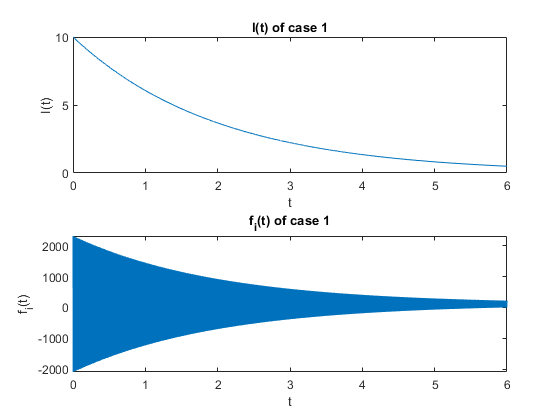
 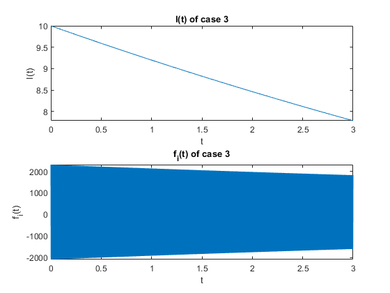 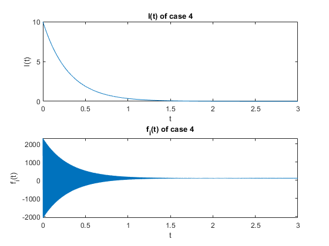 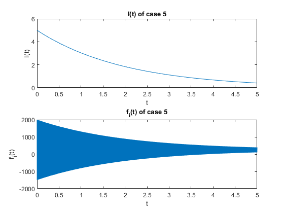 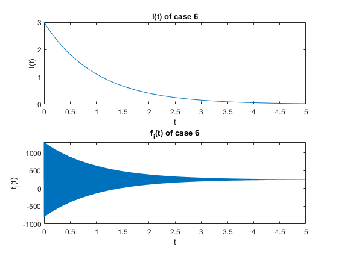
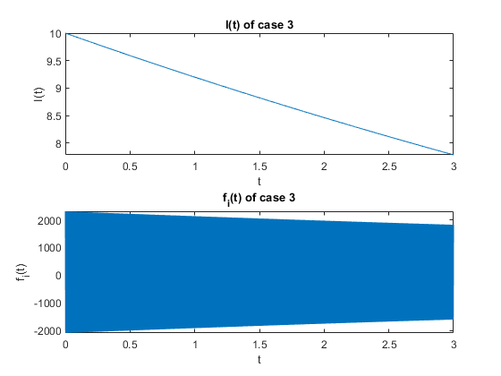 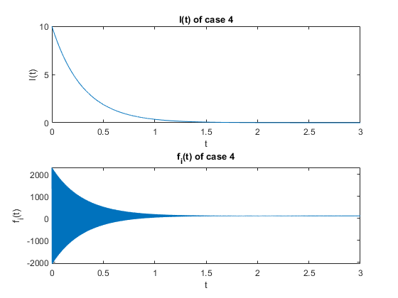 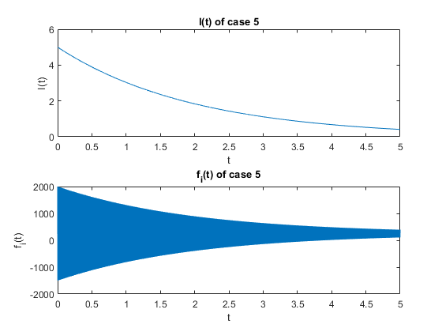 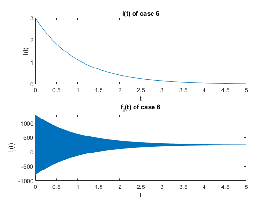 d) Spectrogram and I(t)
The frequency content changes in spectrogram are also follow the wave behavior (slope) of its I(t). From the spectrogram, we can find a harmonic structure in specific area of frequency that usually considerd as fo
% Case 1 figure(7) subplot(2, 1, 1) spectrogram(xx1) title('spectrogram of x(t) in case 1') subplot(2, 1, 2) plot(t1, I_t1) title('I(t) versus t') xlabel('t') ylabel('I(t)') % Case 2 figure(8) subplot(2, 1, 1) spectrogram(xx2) title('spectrogram of x(t) in case 2') subplot(2, 1, 2) plot(t2, I_t2) title('I(t) versus t') xlabel('t') ylabel('I(t)') % Case 3 figure(9) subplot(2, 1, 1) spectrogram(xx3) title('spectrogram of x(t) in case 3') subplot(2, 1, 2) plot(t3, I_t3) title('I(t) versus t') xlabel('t') ylabel('I(t)') % Case 4 figure(10) subplot(2, 1, 1) spectrogram(xx4) title('spectrogram of x(t) in case 4') subplot(2, 1, 2) plot(t4, I_t4) title('I(t) versus t') xlabel('t') ylabel('I(t)') % Case 5 figure(11) subplot(2, 1, 1) spectrogram(xx5) title('spectrogram of x(t) in case 5') subplot(2, 1, 2) plot(t5, I_t5) title('I(t) versus t') xlabel('t') ylabel('I(t)') % Case 6 figure(12) subplot(2, 1, 1) spectrogram(xx6) title('spectrogram of x(t) in case 6') subplot(2, 1, 2) plot(t6, I_t6) title('I(t) versus t') xlabel('t') ylabel('I(t)')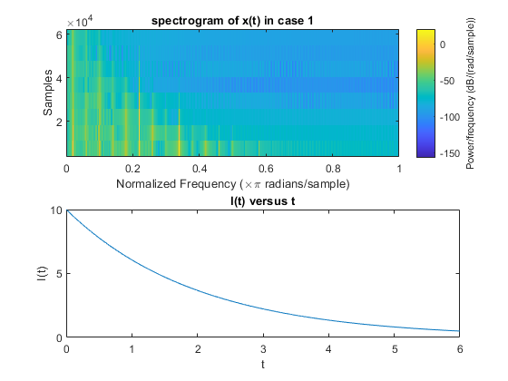 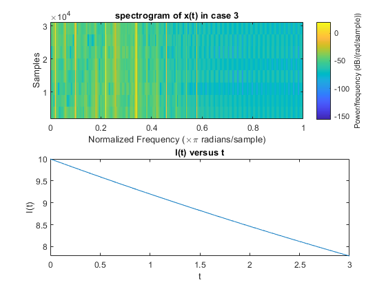 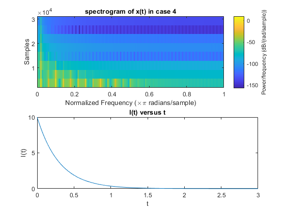 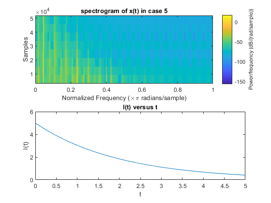 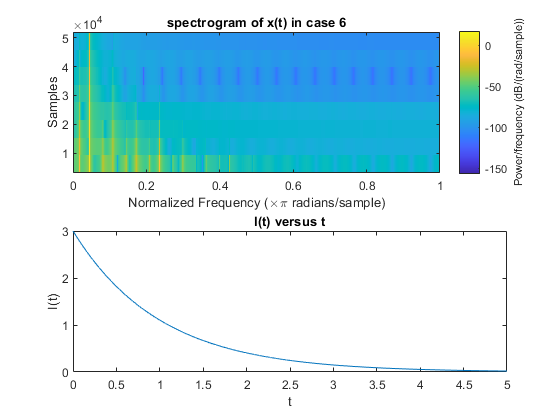
e) Compare between bell wave with A(t)
The signal of x(t) in each case totally follow the behavior of its A(t). This is because the swing amplitude of X(t) is effected by the τ which controls both A(t) and I(t).
% Generate A(t) in each case A_t1 = bellenv(tau1,dur1,fsamp); A_t2 = bellenv(tau2,dur2,fsamp); A_t3 = bellenv(tau3,dur3,fsamp); A_t4 = bellenv(tau4,dur4,fsamp); A_t5 = bellenv(tau5,dur5,fsamp); A_t6 = bellenv(tau6,dur6,fsamp); % Case 1 figure(13) subplot(2, 1, 1) plot(t1, xx1) title('x(t) versus t in case 1') subplot(2, 1, 2) plot(t1, A_t1) title('A(t) versus t') xlabel('t') ylabel('A(t)') % Case 2 figure(14) subplot(2, 1, 1) plot(t2, xx2) title('x(t) versus t in case 2') subplot(2, 1, 2) plot(t2, A_t2) title('A(t) versus t') xlabel('t') ylabel('A(t)') % Case 3 figure(15) subplot(2, 1, 1) plot(t3, xx3) title('x(t) versus t in case 3') subplot(2, 1, 2) plot(t3, A_t3) title('A(t) versus t') xlabel('t') ylabel('A(t)') % Case 4 figure(16) subplot(2, 1, 1) plot(t4, xx4) title('x(t) versus t in case 4') subplot(2, 1, 2) plot(t4, A_t4) title('A(t) versus t') xlabel('t') ylabel('A(t)') % Case 5 figure(17) subplot(2, 1, 1) plot(t5, xx5) title('x(t) versus t in case 5') subplot(2, 1, 2) plot(t5, A_t5) title('A(t) versus t') xlabel('t') ylabel('A(t)') % Case 6 figure(18) subplot(2, 1, 1) plot(t6, xx6) title('x(t) versus t in case 6') subplot(2, 1, 2) plot(t6, A_t6) title('A(t) versus t') xlabel('t') ylabel('A(t)')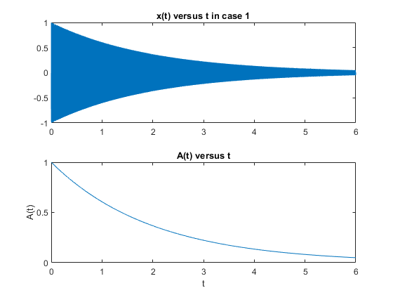 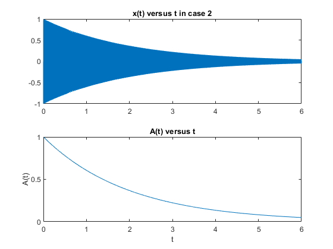 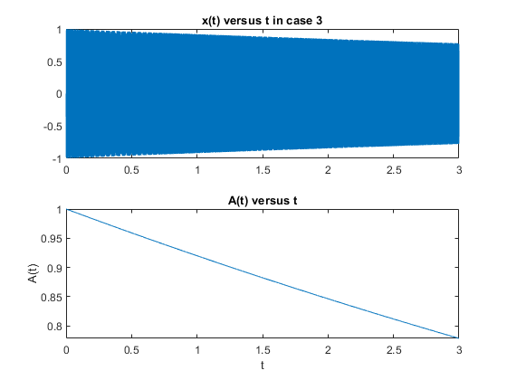 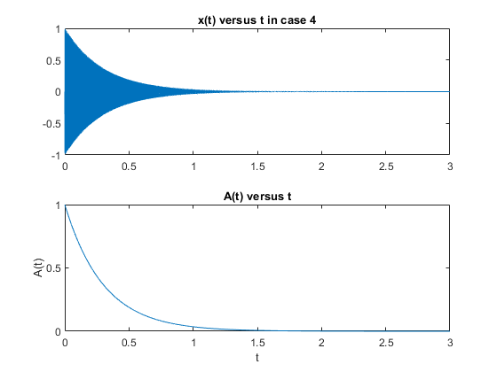 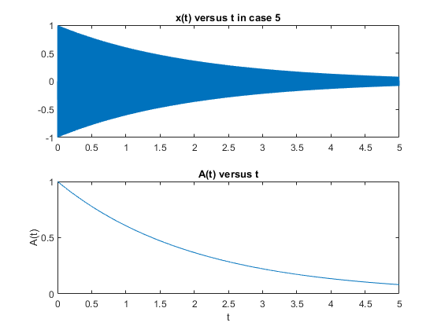 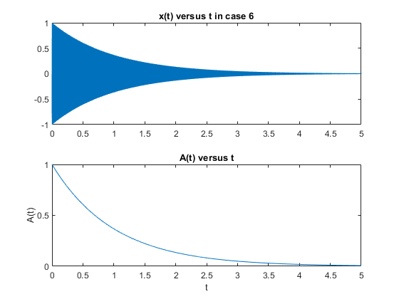
f) Plot of 100-200 samples
From the sampled plots above, we can conclude that the bell sound wave is affected by many factors like τ, Io, fo, etc. The main factor is the fundamental fo and τ. fo highly controls the tone of the sound (thick or sharp).
% Case 1 figure(19) plot(t1(32900:33100), xx1(32900:33100)) title('200 Samples of x(t) in case 1') % Case 2 figure(20) plot(t2(32900:33100), xx2(32900:33100)) title('200 Samples of x(t) in case 2') % Case 3 figure(21) plot(t3(12900:13100), xx3(12900:13100)) title('200 Samples of x(t) in case 3') % Case 4 figure(22) plot(t4(12900:13100), xx4(12900:13100)) title('200 Samples of x(t) in case 4') % Case 5 figure(23) plot(t5(22900:23100), xx5(22900:23100)) title('200 Samples of x(t) in case 5') % Case 6 figure(24) plot(t6(22900:23100), xx6(22900:23100)) title('200 Samples of x(t) in case 6')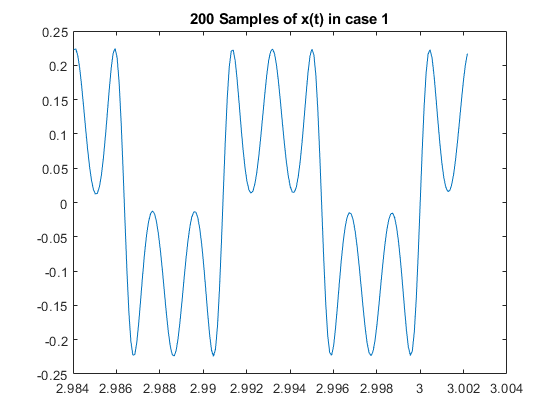 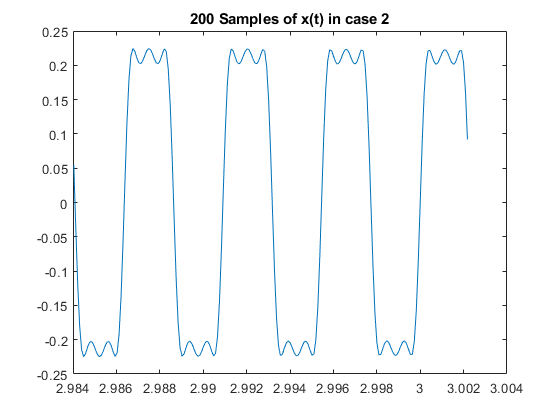 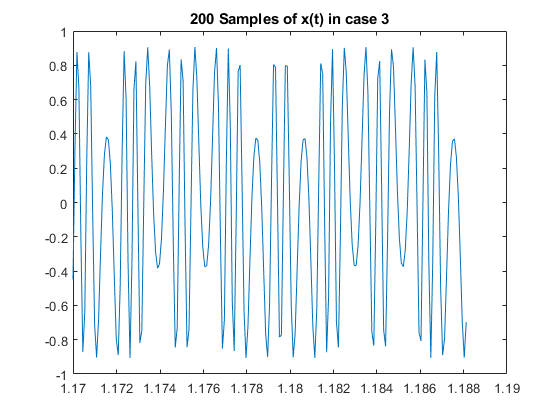 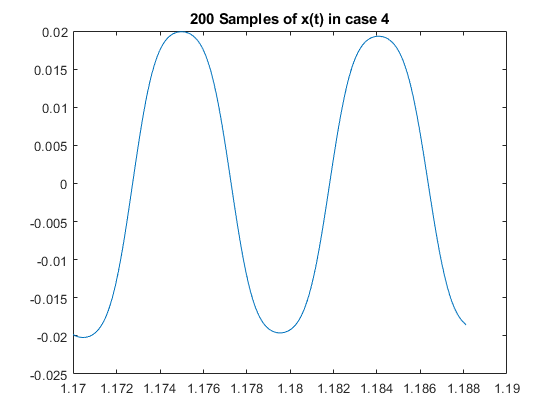 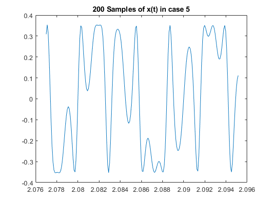 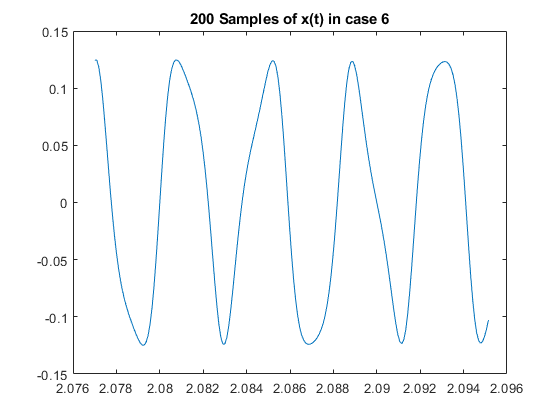
4.4 Comments about the Bell
After few experiments, we think the choice of ratio 1:2, Io: 2, τ: 3 can generate a better sound of bell.
% Change factors ff_44 = [130 130*2]; Io_44 = 2; tau_44 = 3; dur_44 = 6; t_44 = 0:1/fsamp:dur_44; xx_44 = bell(ff_44,Io_44,tau_44,dur_44,fsamp); % Play the sound and generate audio file soundsc(xx_44, fsamp); pause(dur_44); audiowrite('bell_44.wav',xx_44,fsamp,'BitsPerSample',16);
5 C-Major Scale
Try to make seven consecutive notes of C-Major Scale
% Generate factors fc_c = [130.81 146.83 164.81 174.61 196 220 246.94]; Io_c = 2; tau_c = 3; dur_c = 1; yy = 0; % Generate the consecutive notes for i = 1:length(fc_c) fcc = fc_c(i); fm_c = fcc*2; ff_c = [fcc fm_c]; yy = [yy bell(ff_c,Io_c,tau_c,dur_c,fsamp)]; end % Play the sound and store in audio file soundsc(yy, fsamp); audiowrite('Major_c.wav',yy,fsamp,'BitsPerSample',16);
Function: Bell Envelope
function yy = bellenv(tau, dur, fsamp) t = 0:1/fsamp:dur; y0 = 1; yy = y0*exp(-t/tau); end
Function: Bell
function xx = bell(ff, Io, tau, dur, fsamp) Ao = 1; % Amplitude value set to 1 as default A_t = Ao*bellenv(tau, dur, fsamp); % Amplitude envelope I_t = Io*bellenv(tau, dur, fsamp); % Modulation index envelope t = 0:1/fsamp:dur; xx = A_t.*cos(2*pi*ff(1).*t+I_t.*cos(2*pi*ff(2).*t-pi/2)-pi/2); % usage: xx = bell(ff, Io, tau, dur, fsamp) % % where: ff = frequency vector (containing fc and fm) % Io = scale factor for modulation index % tau = decay parameter for A(t) and I(t) % dur = duration (in sec.) of the output signal % fsamp = sampling rate end
Function: Instantaneous Frequency
function fi = instfreq(fc, fm, I_t, didt, fsamp, dur) t = 0:1/fsamp:dur; fi = fc-fm*I_t.*sin(2*pi*fm.*t - pi/2) + didt.*cos(2*pi*fm.*t - pi/2); end